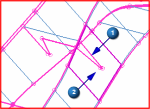

Stitch the rib to the right side
Using the steps you learned previously, stitch the edge of the BOOM_RIB_2 component to the nearby face of the BOOM_RIGHT component.
|
Tip |
You may need to rotate the assembly to select the face on the BOOM_RIGHT component. |
|

|
(1) Edge of BOOM_RIB_2; (2) Face on BOOM_RIGHT
 Save (Quick Access toolbar)
Save (Quick Access toolbar)